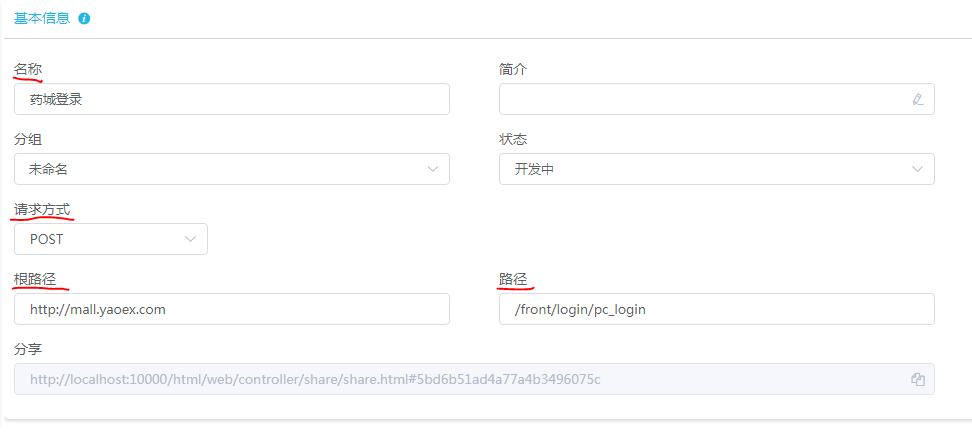
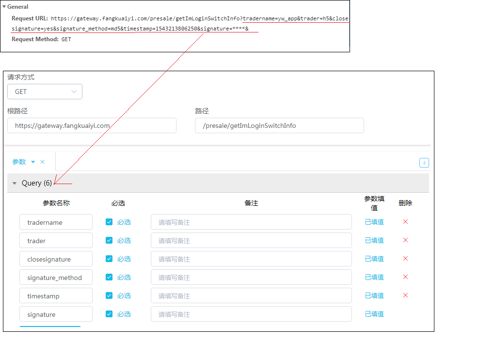
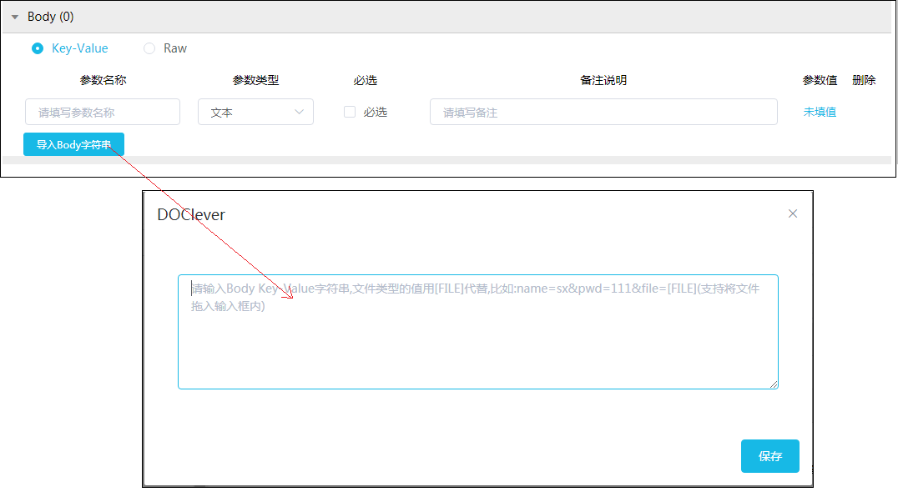
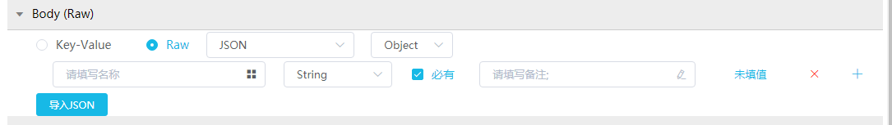

关于接口录入
1. 必填信息：
（a）接口名称（所取名称能让人明白接口的功能，另如测试环境和生产环境域名不一样的，请备注下）
（b）根路径BaseUrl（即域名，例如：http://mall.yaoex.com。由于https请求暂时还有问题未解决，可能会失败。请尽量使用http，避开https。）
（c）路径url（即请求地址，例如：/passport/sso/pc_login）
（d）请求方式（常见的请求方式：GET、POST，请根据接口的实际请求方式填写）

2. 接口参数：
（a）如果是GET 请求，一般来说，接口的参数就在url的？问号之后（例如：http://mall.yaoex.com/product/toSearchPage?search=999&keyword=999&from=0）。
直接复制整个链接放入接口的“路径”中，系统会自动识别参数，将参数录入Query 中。如下图所示：

（b）如果是POST 请求，接口的参数一般是form形式，可以在Form Data中找到。
参数较多时，可以利用抓包工具获取Key=Value&Key1=Value1 类型的字符串。
下图以fiddler为例，Inspectors>TextView中的字符串进行复制，然后在接口录入的Body下点击“导入Body字符串”，将前面复制的字符串粘贴，确定后便能自动识别参数，将参数录入Body 中。
如下图所示：

（c）有些POST 请求的接口，参数是json形式。
在接口录入时正确选择参数类型，然后按照以上（b）的方法从抓包工具例如fiddler中获取json字符串，最后点击“导入JSON”粘贴即可。

（d）有些POST 请求的接口，url里面也有参数。
那么url的？问号之后的参数放入Query 中，
Form Data中的参数则录入到Body 中。